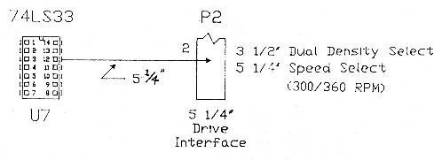
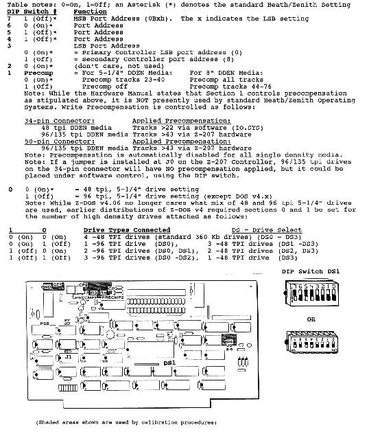

|
Z-207 FDD Controller Barfield Mod |

|
General Note: This article was originally published as an insert to issue #76,
July-August 2001, of the "Z-100 LifeLine". The information regarding the DIP switch has been updated to reflect continuing changes to the BIOS.
electronics and soldering skills! Try this ONLY AT YOUR OWN RISK!
Background: The Z-207 floppy disk controller has two physically different connectors for the standard density drives of the period: the large 8" drives using a 50-pin cable and a 500 KHz transfer rate, and the standard dual sided, double density (DSDD) 5-1/4" drive using a 34-pin cable with a 250 KHz transfer rate. The two connectors on the Z-207 floppy controller had several other differences besides the number of pins. - There are separate buffers and drive select decoders. The Z-207 has a density select signal labeled: 8"/5". A high logic level for this signal tells the board that it is using high density drives and enables the data buffers and decoders that go to the 50-pin connector. When the 8"/5" signal is low, the data buffers and decoders of the 34-pin connector are enabled. - There is also circuitry on the Z-207 which determines the speed at which data transfer occurs. The 8"/5" signal is used to select this data transfer rate. The standard Z-207 was capable of using 96 tpi or 48 tpi 5-1/4" drives by DIP switch selection, but the drives could not be mixed. And numerous new floppy disk types emerged over the years, leaving Z-100 owners clammering for more capability. Basically, with the stock Z-207 controller board, if you wanted to use the new high density drives, including 3-1/2" and a very wide selection of formats, some of which were very unique, you had to use "DiskPack" (a floppy disk device driver by William Flanagin and distributed by Paul F. Herman, Inc.). A modified cable was necessary to adapt the 50-pin connector signals for the 34-pin drive connectors. Then, MS-DOS version 4.x came on the scene, offering another option by providing the software support needed to accommodate the more popular drives of the period. And the hardware modifications needed were already developed. Our humble Z-207 Floppy Disk Controller, with modifications, is up to the task! Using Dual Density Drives on the Z-100: Issue #13 of the Z-100 LifeLine published the first official modification to the floppy card. Called the "Hughes" Mod, after its developer, Jim Hughes of Houston, Texas, it made maximum use of Bill Flanagin's DiskPack program, which provided all the popular PC disk formats, plus a few of its own. Essentially, it provided the means to use dual density floppy drives (i.e., 3-1/2" 1.4Mb/720Kb or 5-1/4" 1.2Mb/360Kb drives). It did have its limitations, however.
- The 50-pin connector was essentially disabled, therefore losing the capability to use 8" drives. About the same time this modification was published, Travis Barfield also submitted a modification that used the 5" FASTEP signal (controllable by writing to a port) as a density select signal, allowing the 8"/5" signal to select the appropriate connector and continued use of the 8" drives. At the time, this would have required a change to the DiskPack Software, which could not be done easily at that time. Changes made to the Z-100 Monitor ROM and the new BIOS with MS-DOS v4.01 for the Z-100, provided the necessary software changes to support this better Z-207 modification. While the modification was fully described in issue #29, I'm republishing this information because of its importance and for those who may not have that issue available.
A Better Mousetrap! In order to use this Z-100 Z-207 modification to support dual density drives, you must use the new MS-DOS v4.01 or later (Select the Barfield Z-207 Mod in DRIVECFG). Also, DiskPack is no longer required. The modified Z-207 card will still work normally with earlier versions of DOS, and other operating systems like CP/M, but your dual density drives will not work correctly. This modification is simple to perform, but some soldering skills are required. The only soldering to the board is at pin 2 of the 34-pin drive connector, so this modification is completely reversible. You will need four (4) 14-pin DIP sockets, plus some small guage insulated hook-up wire. If you don't have the sockets, the mod can be done by carefully soldering directly to the integrated circuits. The ICs involved are still readily available, if you need spares. First we must perform the Z-207 Floppy Disk Controller 5.25" Faststep Modification to allow the controller to automatically switch between standard and high density modes. Figure Notes: 1. Pins shown with a box outside the IC outline are bent out and MUST NOT make contact with the existing socket pin. 2. Connections shown directly into the IC pin MUST insert into the existing IC socket pin. 3. If not using the sockets, configure the IC itself the same way as the socket pins shown here. To make use of this modification, BIOS modification or BIOS v4.xx or later is required!
Figure 1. 5.25" Faststep Modification
 Remove the Z-207 floppy controller board from your Z-100, using the procedures provided in your User's Manual. Referring to Figure 1, please follow these steps:
[ ] 1. Cut a piece of wire 2-1/4" long and strip 1/8" of insulation from each end.
[ ] 2. Remove IC U14 (74LS74) from the Z-207 board. In its place install the new IC
[ ] 3. Bend out pin 12 of one of the new 14-pin sockets. Remove IC U4 (74LS74) from
[ ] 4. Connect the other end of the wire coming from pin 8 of U14 to the bent out
[ ] 5. Cut a piece of wire 8-1/2" long and strip 1/8" of insulation from each end.
[ ] 6. Reinstall the 74LS74 chip back into the piggy-backed socket at U4. Recheck
[ ] 7. Bend out pin 1 on one of the new 14-pin sockets. Remove IC U11 (7417) from
[ ] 8. Solder the other end of the 8-1/2" wire coming from pin 12 of U4 to the bent
[ ] 9. Reinstall the 7417 chip back into the piggy-backed socket at U11. Recheck
Next we must perform the Z-207 Floppy Disk Controller Board 3.5"/5.25" Dual Density Select Modification. This will allow the controller to notify the respective drive that it should use standard or high density mode, based on the level of pin 2 of the 34-pin drive connector. It also signals 5-1/2" dual density drives to switch speeds between 300 rpm and 360 rpm.
[ ] 10. With a sharp knife or razor blade, carefully whittle away the plastic
Figure 3. Pin 2 of the 34-Pin Connector 1/4" from the other.
[ ] 12. Carefully solder the 1/4" stripped end of the 5" wire to this prepared pin 2
[ ] 13. Solder the other end of the 5" wire coming from pin 2 to pin 12 of the
[ ] 14. Remove IC U7 (74LS33) from the Z-207 board. In its place install the new
[ ] 15. Carefully inspect the ICs and sockets to ensure that all pins, except pin #12
[ ] 16. Carefully dress the wires close to the board and around the other ICs. [ ] 17. This completes the 5" Faststep Dual-Density Select modification.
If you are also doing the Z-207 Throughput Modification, proceed to that section.
Setting Z-207 DIP Switches The Z-207's DIP Switch is used to set both the port address and whether a drive requires double-stepping (to do 40 tracks on an 80 track drive). The old BIOS (pre-DOS version 4) only supported either 40 (48 tpi) track drives or 80 (96 tpi) track drives, but NOT both. The new BIOS supports both and permits us to boot from any of the drives and other devices. See Figure 4 for a full explanation of the Z-207 Controller Card's DIP switch settings. Run DRIVECFG to tell BIOS what each drive is; LD (Low Density), DD (Dual Density), or HD (High Density). Please NOTE: - Dual Density Drives count as High Density for these settings. - By design, early DOS v4's BIOS required that the High or Dual Density drives occupy the lowest drive select numbers! This could leave your primary Boot 360 Kb drive set as DS4! But, this drive could still be set by DRIVECFG to Drive A:! With BIOS v4.06 and later, the BIOS no longer cares what mix of 48 and 96 tpi drives are installed, nor in what order.
 Z-207 Floppy Disk Controller Board DIP Switch Settings |

 HOME Page
HOME Page
|
LifeLine Page
|
Z-100 Page
|
Repair Page
|
|
Copyright © 2007, Steven W. Vagts Revised -- September 07, 2007 |